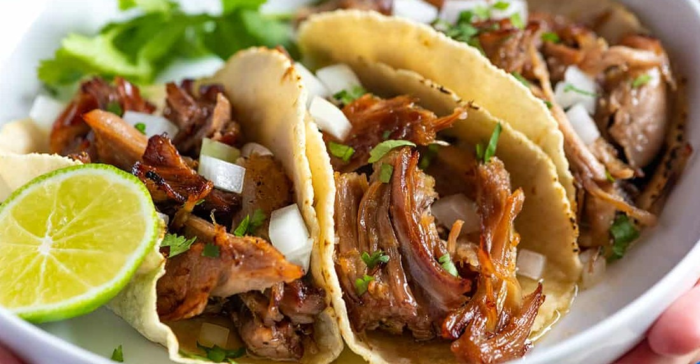

Sestavine
- Svinjina, 1-2kg, vrat ali katerikoli masten kos
- 1 pomaranča
- 2 srednje čebule
- 2 lovorjeva lista
- cimet v kosu
- 4 stroki česna
- Rastlinsko olje, recimo 1L ampak rabi se ga manj
Postopek
- Damo v lonec ali posodo za v pečico
- Kuhamo v loncu v pečici na 135°C, 3 1/2 ure.